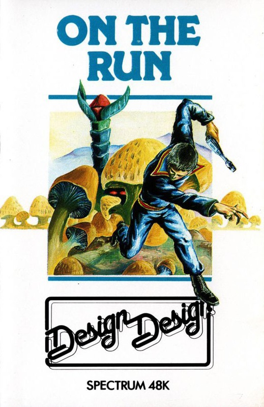
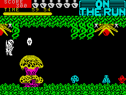
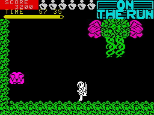
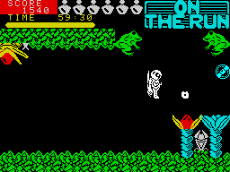

On the Run


{kind=link}

| Publisher: | Design Design |
| Price: | £6.90 |
| Year: | 1985 |
| Source: | CRASH, Issue 20 |

Design Design have produced some pretty spectacular games in the past so it was interesting to follow the development of On the Run from its early days as an idea in a Public House to the finished game on the — seemingly — public CRASH software desk. The inlay itemises the features of the game, the most striking of which is an abundance of mushrooms. Also listed are the features not included: orchids; buns and leg warmers. Almost certainly too many late nights writing this one chaps!

does battle with furious flora
down among the mushrooms in
Design Design’s ON THE RUN.
Essentially, what Graham and Stuart have cooked up here is a very large and complex maze game. You play the part of Rick Swift, or Rick for short. Rick is the sort of character that makes the news pages for doing-good. This time he has bitten off a little more than he can chew. Anxious that his next stunt should make the front page of every marmalade stained morning rag, Rick accepted a task from the Defence Department to clean up an area that had become contaminated by a spillage of chemical weapons. The plants and wild life that had lived the sort of quiet life normally enjoyed by plants and wildlife, have now suffered from the effects of the chemicals, to such an extent that most of them have mutated into such strange forms and become so miffed by man in general, for his callousness, that they really want to get their own back. Since Rick is the idiot going into the zone he is going to have to cope with the angry mutations which include anything from giant mushrooms to a pair of body-less jaws.

Rick babes... they’re out to get
you before you strut your stuff.
MAKE WAY FOR THE MUTANTS! —
No, not the Design Design
programmers, the maze monsters
The Ministry had the decency to equip Rick with a suit which will protect him from the effects of the chemicals in the zone. His jet pack helps him move around at speed, which is just as well because the six remaining flasks that must be collected will degrade in one hour — then Rick will be dealing with something a sight more dangerous than a bunch of angry mutated flowers. The suit works well except when it comes into contact with one of the mutations, then it starts to degrade and, unless its energy is restored, will reach the point when it is useless and Rick will pass away.
There are lots of weird and wonderful objects lying around the maze. Generally they produce one of four effects: death; more energy; get you into another zone or... do absolutely nothing at all. The mushrooms are the best and safest source of energy but for everything else you will have to experiment. With regard to the mobile objects within the maze the best action is to zap everything, ask questions later. To make life a little easier you should discover a few smart bombs littered around the place. These are very useful for clearing areas full of mobile mutants. The maze itself is very large, weighing in at something over 300 screens, and is divided into a number of sections. However, you can only move from one section to another if you have collected one particular object from the area you are already in.

Somebody muttered something
about feeding them before they
let you past. A bit like our
Software Ed, Jeremy Spencer!
Above the main display a bar graph lets you know the condition of your suit, and above that a clock tells you how much time is left before the flasks degrade. If you collect any smart bombs they will be shown underneath the empty slots waiting to be filled with collected flasks. Points are awarded for killing the mutants and your score is updated at the top left of the screen. The only thing Design Design left out was their traditional high score table, still they do apologise, so that’s OK.
CRITICISM
‘On The Run is an extremely colourful arcade adventure of the maze variety. The graphics are very neat and very smooth. The game is instantly playable. It includes some very nice touches, for example you can’t go through some entrances until you have picked up an object. There is such a variety of objects to pick up it will be some time you manage to assess the value or danger of any of them. Worthy of a CRASH Smash.’
‘Where’s the front end? I was really looking forward to the huge list of options that seem to have become a Design Design hallmark. Not even a high score table this time, what’s the idea chaps? However, after the opening disappointment I was pleased by the really superb graphics — in a way they reminded me of Jetpac from Ultimate. I loved the wide variety of different creatures that inhabit the playing area. Some of them bear a vague resemblance to creatures found in fantasy games. The maze is separated into sections, and frogs guard the entrance to each one. Each new section has more nasties in it so it’s tougher to stay alive. Generally I enjoyed playing this game, but what’s more I can see myself doing so for the next couple of months.’
‘My friend lent me his Spectrum when mine collapsed after running this game, but what a way to go! A highly colourful game with great graphics for the various flora and fauna. The irrepressible Design Design humour comes through very strongly, I especially loved the gnashing teeth. The objective is pretty simple but the sheer size of the game demands great stamina and good joystick-jockeying. The things at Des-Des should be proud of this one.’
COMMENTS
| Control keys: | Definable |
| Joystick: | Any |
| Keyboard play: | Responds well |
| Use of colour: | Very attractive |
| Graphics: | Superb |
| Sound: | Limited but it has good squidgy spot effects |
| Skill levels: | One |
| Lives: | One, more energy can be collected |
| Screens: | Over 300 |
| General rating: | An excellent game which should appeal |
| Use of computer: | 90% |
| Graphics: | 92% |
| Playability: | 85% |
| Getting started: | 89% |
| Addictive qualities: | 93% |
| Value for money: | 85% |
| Overall: | 91% |